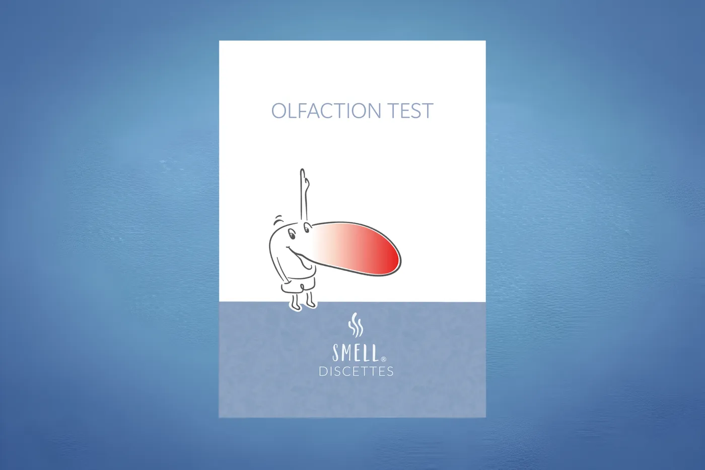
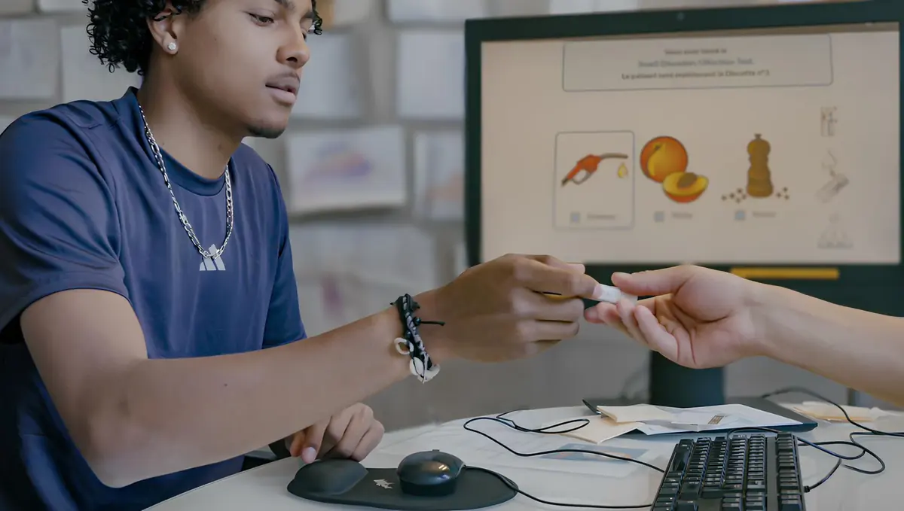

Jahren
Entwicklung und Markteinführung
Der «Smell Diskettes – Olfaction Test» wird entwickelt, produziert und vertrieben – bis die Lieferkette nicht mehr verfügbar ist und die Produktion eingestellt werden muss.
Innovative Riechdisketten für Ärztinnen und Ärzte: für die genaue und effiziente Verlaufskontrolle der sensorischen Fähigkeiten Ihrer Patientinnen und Patienten – vor und nach dem Eingriff.

Der Geruchssinn ist einer der wichtigsten Sinne des Menschen. Eine Beeinträchtigung der Riechfunktion ist ein häufiges und bedeutsames Symptom in der Rhinologie – und damit auch in der allgemeinen HNO-Praxis. Der Geruchssinn wirkt sich nicht nur auf die Lebensqualität aus: Er trägt zur Sicherheit bei, weil er Gefahren in der Umgebung und am Arbeitsplatz erkennbar macht, etwa Rauch oder austretendes Gas.
Beeinträchtigt werden kann er durch ganz unterschiedliche Faktoren – eine virale Infektion, eine chronische Entzündung der Nasenschleimhaut oder ein Schädel-Hirn-Trauma. Eine Untersuchung der Riechfunktion ist deshalb unerlässlich, um Patientinnen und Patienten zu den Therapieoptionen zu beraten.
Für diese Beurteilung braucht es einen zuverlässigen und alltagstauglichen Test, der zeigt, ob eine Riechstörung vorliegt. Ein solcher Screening-Test unterscheidet zwischen normalem Riechvermögen und einer abnormen Riechfunktion. Fällt das Screening auffällig aus, sind weiterführende Untersuchungen nötig, um eine Diagnose zu stellen und entsprechend zu behandeln.

Der «Smell Diskettes – Olfaction Test» hat eine über 25-jährige Geschichte. Nach einer Unterbrechung ist er heute wieder verfügbar.
Der «Smell Diskettes – Olfaction Test» wird entwickelt, produziert und vertrieben – bis die Lieferkette nicht mehr verfügbar ist und die Produktion eingestellt werden muss.
Nach einer Machbarkeitsanalyse startet das Projekt SMELL Re-Launch. Die früheren Lieferanten stehen nicht mehr zur Verfügung, und die Konstruktionsunterlagen der Riechdisketten fehlen.
Auf Grundlage eines erhaltenen Musters werden die «Smell Discettes» durch Reverse Engineering und eine Neukonstruktion wieder aufgelegt. Parallel entsteht eine neue Lieferkette.
Im Frühjahr 2025 wird die SMELL Discettes GmbH gegründet, um die Produkte herzustellen und die Dienstleistungen rund um den SMELL DISCETTES OLFACTION TEST zu erbringen. Der Test ist wieder verfügbar.
Smell Discettes wurde an der Universität Zürich entwickelt und in vier Publikationen in Rhinology und Clinical Otolaryngology validiert.
Briner & Simmen: Validierung an 124 Probandinnen und Probanden. Bei einem Score von 7 oder 8 beträgt die statistische Sicherheit einer normalen Riechfunktion 99,74 %.
Briner, Simmen & Jones: 10,3 % der Patientinnen und Patienten weisen bereits vor einer Nasenoperation eine eingeschränkte Riechfunktion auf.
Methoden zur Beurteilung des Geruchssinns in der Rhinologie.
Langzeitergebnisse zur Riechfunktion nach endoskopischer Nasennebenhöhlenchirurgie.
Vollständige Literaturangaben senden wir Ihnen auf Anfrage gerne zu.
Das komplette Set mit acht Riechstoff-Disketten, Auswertungsbögen und Gebrauchsanweisung. Erhältlich über unsere Vertriebspartner – Ersatzdisketten sind einzeln nachbestellbar.